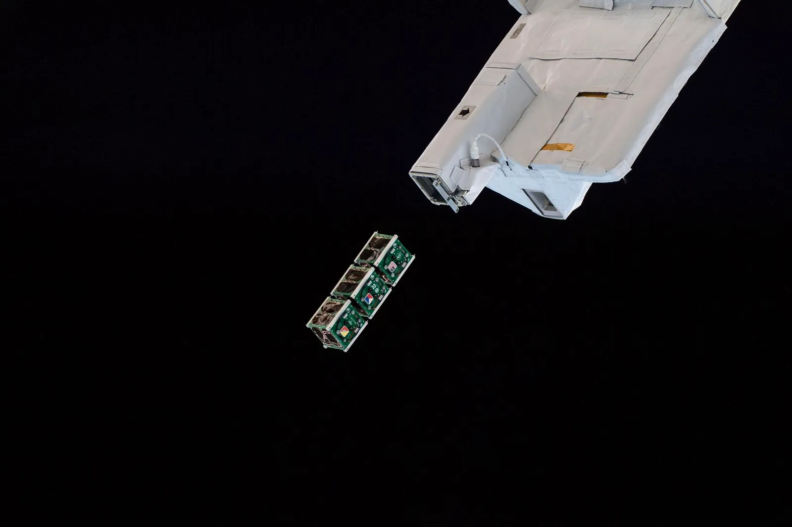

The Library
Articles
Collections 05 Entries 07 Reserved 38
-
01
The Basics
Learn the fundamental concepts of space trash, including what it is, where it came from, and why it matters.
Explore Articles →IMAGE — NASA -
02
STARS Opinions
See what STARS authors think about current issues such as the increasing number of satellites above Earth, data centers in orbit, and space trash policies.
Explore Articles →
IMAGE — NASA -
03
News
Stay up to date on what’s happening in orbit and on the ground: space trash collisions, atmospheric reentries, and how the world is reacting.
Explore Articles →
IMAGE — NASA -
04
Space Trash Laws
Understand the governmental policies and international laws that govern Earth’s orbits and the trash within them.
Explore Articles →
IMAGE — NASA -
05
Space Traffic Management
Discover the technology, procedures, and regulations used to track satellites and debris, prevent collisions, and help keep Earth’s orbits safe.
Explore Articles →
IMAGE — NASA